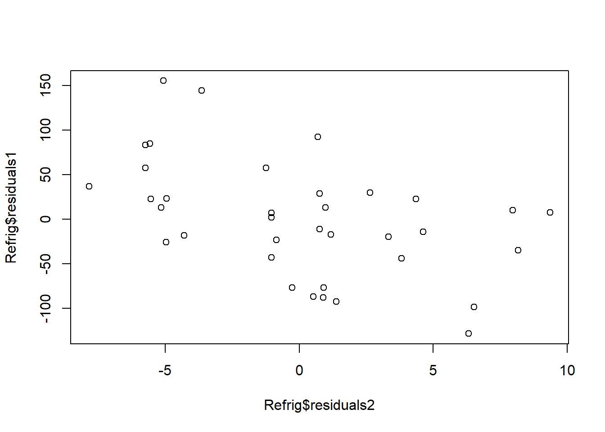

Chapter 4 Variable Selection
Chapter description
This chapter describes tools and techniques to help you select variables to enter into a linear regression model, beginning with an iterative model selection process. In applications with many potential explanatory variables, automatic variable selection procedures are available that will help you quickly evaluate many models. Nonetheless, automatic procedures have serious limitations including the inability to account properly for nonlinearities such as the impact of unusual points; this chapter expands upon the Chapter 2 discussion of unusual points. It also describes collinearity, a common feature of regression data where explanatory variables are linearly related to one another. Other topics that impact variable selection, including out-of-sample validation, are also introduced.
4.1 An iterative approach to data analysis and modeling
In this section, you learn how to:
- Describe the iterative approach to data analysis and modeling.
4.1.1 Video

4.1.2 MC Exercise. An iterative approach to data modeling
Which of the following is not true?
- A. Diagnostic checking reveals symptoms of mistakes made in previous specifications.
- B. Diagnostic checking provides ways to correct mistakes made in previous specifications.
- C. Model formulation is accomplished by using prior knowledge of relationships.
- D. Understanding theoretical model properties is not really helpful when matching a model to data or inferring general relationships based on the data.
4.2 Automatic variable selection procedures
In this section, you learn how to:
- Identify some examples of automatic variable selection procedures
- Describe the purpose of automatic variable selection procedures and their limitations
- Describe “data-snooping”
4.2.1 Video
Video Overhead Details
Show Overhead A Details. Classic stepwise regression algorithm
Show Overhead B Details. Drawbacks of stepwise regression
Show Overhead C Details. Data-snooping in stepwise regression
Show Overhead D Details. Variants of stepwise regression
Show Overhead E Details. Automatic variable selection procedures
4.2.2 Exercise. Data-snooping in stepwise regression
Assignment Text
Automatic variable selection procedures, such as the classic stepwise regression algorithm, are very good at detecting patterns. Sometimes they are too good in the sense that they detect patterns in the sample that are not evident in the population from which the data are drawn. The detect “spurious” patterns.
This exercise illustrates this phenomenom by using a simulation, designed so that the outcome variable (y) and the explanatory variables are mutually independent. So, by design, there is no relationship between the outcome and the explanatory variables.
As part of the code set-up, we have n = 100 observations generated of the outcome y and 50 explanatory variables, xvar1 through xvar50. As anticipated, collections of explanatory variables are not statistically significant. However, with the step() function, you will find some statistically significant relationships!
Instructions
- Fit a basic linear regression model and MLR model with the first ten explanatory variables. Compare the models via an F test.
- Fit a multiple linear regression model with all fifty explanatory variables. Compare this model to the one with ten variables via an F test.
- Use the
stepfunction to find the best model starting with the fitted model containing all fifty explanatory variables and summarize the fit.
Hint. The code shows stepwise regression using BIC, a criterion that results in simpler models than AIC. For AIC, use the option k=2 in the [step()] function (the default)
4.3 Residual analysis
In this section, you learn how to:
- Explain how residual analysis can be used to improve a model specification
- Use relationships between residuals and potential explanatory variables to improve model specification
4.3.1 Video
4.3.2 Exercise. Residual analysis and risk manager survey
Assignment Text
This exercise examines data, pre-loaded in the dataframe survey, from a survey on the cost effectiveness of risk management practices. Risk management practices are activities undertaken by a firm to minimize the potential cost of future losses, such as the event of a fire in a warehouse or an accident that injures employees. This exercise develops a model that can be used to make statements about cost of managing risks.
A measure of risk management cost effectiveness, logcost, is the outcome variable. This variable is defined as total property and casualty premiums and uninsured losses as a proportion of total assets, in logarithmic units. It is a proxy for annual expenditures associated with insurable events, standardized by company size. Explanatory variables include logsize, the logarithm of total firm assets, and indcost, a measure of the firm’s industry risk.
Instructions
- Fit and summarize a MLR model using
logcostas the outcome variable andlogsizeandindcostas explanatory variables. - Plot residuals of the fitted model versus
indcostand superimpose a locally fitted line using theRfunction lowess(). - Fit and summarize a MLR model of
logcostonlogsize,indcostand a squared version ofindcost. - Plot residuals of the fitted model versus `indcost’ and superimpose a locally fitted line using lowess().
Hint. You can access model residuals using mlr.survey1$residuals or mlr.survey1($residuals)
4.3.3 Exercise. Added variable plot and refrigerator prices
Assignment Text
What characteristics of a refrigerator are important in determining its price (price)? We consider here several characteristics of a refrigerator, including the size of the refrigerator in cubic feet (rsize), the size of the freezer compartment in cubic feet (fsize), the average amount of money spent per year to operate the refrigerator (ecost, for energy cost), the number of shelves in the refrigerator and freezer doors (shelves), and the number of features (features). The features variable includes shelves for cans, see-through crispers, ice makers, egg racks and so on.
Both consumers and manufacturers are interested in models of refrigerator prices. Other things equal, consumers generally prefer larger refrigerators with lower energy costs that have more features. Due to forces of supply and demand, we would expect consumers to pay more for these refrigerators. A larger refrigerator with lower energy costs that has more features at the similar price is considered a bargain to the consumer. How much extra would the consumer be willing to pay for this additional space? A model of prices for refrigerators on the market provides some insight to this question.
To this end, we analyze data from n = 37 refrigerators.
Instructions
# Pre-exercise code
Refrig <- read.table("CSVData\\Refrig.csv", header = TRUE, sep = ",")
summary(Refrig)
Refrig1 <- Refrig[c("price", "ecost", "rsize", "fsize", "shelves", "s_sq_ft", "features")]
round(cor(Refrig1), digits = 3)
refrig_mlr1 <- lm(price ~ rsize + fsize + shelves + features, data = Refrig)
summary(refrig_mlr1)
Refrig$residuals1 <- residuals(refrig_mlr1)
refrig_mlr2 <- lm(ecost ~ rsize + fsize + shelves + features, data = Refrig)
summary(refrig_mlr2)
Refrig$residuals2 <- residuals(refrig_mlr2)
plot(Refrig$residuals2, Refrig$residuals1)
#library(Rcmdr)
#refrig_mlr3 <- lm(price ~ rsize + fsize + shelves + features + ecost, data = Refrig)
#avPlots(refrig_mlr3, terms = "ecost") price ecost rsize fsize
Min. : 460.0 Min. :60.00 Min. :12.6 Min. :4.100
1st Qu.: 545.0 1st Qu.:66.00 1st Qu.:12.9 1st Qu.:4.400
Median : 590.0 Median :68.00 Median :13.2 Median :5.100
Mean : 626.4 Mean :70.51 Mean :13.4 Mean :5.184
3rd Qu.: 685.0 3rd Qu.:75.00 3rd Qu.:13.9 3rd Qu.:5.700
Max. :1200.0 Max. :94.00 Max. :14.7 Max. :7.400
shelves s_sq_ft features
Min. :1.000 Min. :20.60 Min. : 1.000
1st Qu.:2.000 1st Qu.:23.40 1st Qu.: 2.000
Median :2.000 Median :24.00 Median : 3.000
Mean :2.514 Mean :24.53 Mean : 3.459
3rd Qu.:3.000 3rd Qu.:25.50 3rd Qu.: 5.000
Max. :5.000 Max. :30.20 Max. :12.000
price ecost rsize fsize shelves s_sq_ft features
price 1.000 0.522 -0.024 0.720 0.400 0.155 0.697
ecost 0.522 1.000 -0.033 0.855 0.188 0.058 0.334
rsize -0.024 -0.033 1.000 -0.235 -0.363 0.401 -0.096
fsize 0.720 0.855 -0.235 1.000 0.251 0.110 0.439
shelves 0.400 0.188 -0.363 0.251 1.000 -0.527 0.160
s_sq_ft 0.155 0.058 0.401 0.110 -0.527 1.000 0.083
features 0.697 0.334 -0.096 0.439 0.160 0.083 1.000
Call:
lm(formula = price ~ rsize + fsize + shelves + features, data = Refrig)
Residuals:
Min 1Q Median 3Q Max
-128.200 -34.963 7.081 28.716 155.096
Coefficients:
Estimate Std. Error t value Pr(>|t|)
(Intercept) -698.89 302.60 -2.310 0.02752 *
rsize 56.50 20.56 2.748 0.00977 **
fsize 75.40 13.93 5.414 5.96e-06 ***
shelves 35.92 11.08 3.243 0.00277 **
features 25.16 5.04 4.992 2.04e-05 ***
---
Signif. codes: 0 '***' 0.001 '**' 0.01 '*' 0.05 '.' 0.1 ' ' 1
Residual standard error: 68.11 on 32 degrees of freedom
Multiple R-squared: 0.789, Adjusted R-squared: 0.7626
F-statistic: 29.92 on 4 and 32 DF, p-value: 2.102e-10
Call:
lm(formula = ecost ~ rsize + fsize + shelves + features, data = Refrig)
Residuals:
Min 1Q Median 3Q Max
-7.8483 -4.3064 0.5154 2.6324 9.3596
Coefficients:
Estimate Std. Error t value Pr(>|t|)
(Intercept) -14.2165 20.9365 -0.679 0.5020
rsize 2.8744 1.4225 2.021 0.0517 .
fsize 8.9085 0.9636 9.245 1.49e-10 ***
shelves 0.2895 0.7664 0.378 0.7081
features -0.2006 0.3487 -0.575 0.5692
---
Signif. codes: 0 '***' 0.001 '**' 0.01 '*' 0.05 '.' 0.1 ' ' 1
Residual standard error: 4.712 on 32 degrees of freedom
Multiple R-squared: 0.7637, Adjusted R-squared: 0.7342
F-statistic: 25.86 on 4 and 32 DF, p-value: 1.247e-094.4 Unusual observations
In this section, you learn how to:
- Compare and contrast three alternative definitions of a standardized residual
- Evaluate three alternative options for dealing with outliers
- Assess the impact of a high leverage observation
- Evaluate options for dealing with high leverage observations
- Describe the notion of influence and Cook’s Distance for quantifying influence
4.4.1 Video
Video Overhead Details
Show Overhead A Details. Unusual observationsUnusual observations
Show Overhead B Details. Standardized residuals
Show Overhead C Details. Outlier - an unusal standardized residual
Show Overhead D Details. High leverage points
Show Overhead E Details. High leverage point graph
Show Overhead F Details. Leverage
4.4.2 Exercise. Outlier example
In chapter 2, we consider a fictitious data set of 19 “base” points plus three different types of unusual points. In this exercise, we consider the effect of one unusal point, “C”, this both an outlier (unusual in the “y” direction) and a high leverage point (usual in the x-space). The data have been pre-loaded in the dataframe outlrC.
Instructions
- Fit a basic linear regression model of
yonxand store the result in an object. - Use the function rstandard() to extract the standardized residuals from the fitted regression model object and summarize them.
- Use the function hatvalues() to extract the leverages from the model fitted and summarize them.
- Plot the standardized residuals versus the leverages to see the relationship between these two measures that calibrate how unusual an observation is.
4.4.3 Exercise. High leverage and risk manager survey
Assignment Text
In a prior exercise, we fit a regression model of logcost on logsize, indcost and a squared version of indcost. This model is summarized in the object mlr_survey2. In this exercise, we examine the robustness of the model to unusual observations.
Instructions
- Use the
Rfunctions rstandard() and hatvalues() to extract the standardized residuals and leverages from the model fitted. Summarize the distributions graphically. - You will see that there are two observations where the leverages are high, numbers 10 and 16. On looking at the dataset, these turn out to be observations in a high risk industry. Create a histogram of the variable
indcostto corroborate this. - Re-run the regression omitting observations 10 and 16. Summarize this regression and the regression in the object
mlr_survey2, noting differences in the coefficients.
4.5 Collinearity
In this section, you learn how to:
- Define collinearity and describe its potential impact on regression inference
- Define a variance inflation factor and describe its effect on a regression coefficients standard error
- Describe rules of thumb for assessing collinearity and options for model reformulation in the presence of severe collinearity
- Compare and contrast effects of leverage and collinearity
4.5.1 Video
4.5.2 Exercise. Collinearity and term life
Assignment Text We have seen that adding an explanatory variable \(x^2\) to a model is sometimes helpful even though it is perfectly related to \(x\) (such as through the function \(f(x)=x^2\)). But, for some data sets, higher order polynomials and interactions can be approximately linearly related (depending on the range of the data).
This exercise returns to our term life data set Term1 (preloaded) and demonstrates that collinearity can be severe when introducing interaction terms.
Instructions
- Fit a MLR model of
logfaceon explantory variableseducation,numhhandlogincome - Use the function vif() from the
carpackage (preloaded) to calculate variance inflation factors. - Fit and summarize a MLR model of
logfaceon explantory variableseducation,numhhandlogincomewith an interaction betweennumhhandlogincome, then extract variance inflation factors.
Hint. If the car package is not available to you, then you could calculate vifs using the [lm()] function, treating each variable separately. For example
1/(1-summary(lm(education ~ numhh + logincome, data = Term1))$r.squared)
gives the education vif.
4.6 Selection criteria
In this section, you learn how to:
- Summarize a regression fit using alternative goodness of fit measures
- Validate a model using in-sample and out-of-sample data to mitigate issues of data-snooping
- Compare and contrast SSPE and PRESS statistics for model validation
4.6.1 Video
4.6.2 Exercise. Cross-validation and term life
Assignment Text
Here is some sample code to give you a better feel for cross-validation.
The first part of the randomly re-orders (“shuffles”) the data. It also identifies explanatory variables explvars.
The function starts by pulling out only the needed data into cvdata. Then, for each subsample, a model is fit based on all the data except for the subsample, in train_mlr with the subsample in test. This is repeated for each subsample, then results are summarized.
Show Code
Instructions
- Calculate the cross-validation statistic using only logarithmic income,
logincome. - Calculate the cross-validation statistic using
logincome,educationandnumhh. - Calculate the cross-validation statistic using
logincome,education,numhhandmarstat.
The best model has the lowest cross-validation statistic.
Hint. The function [sample()] is for taking random samples. We use it without replacement so it results in a re-ordering of data.